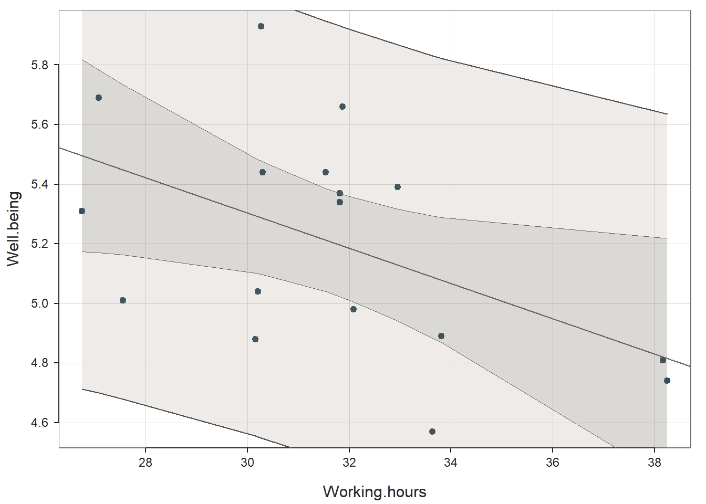
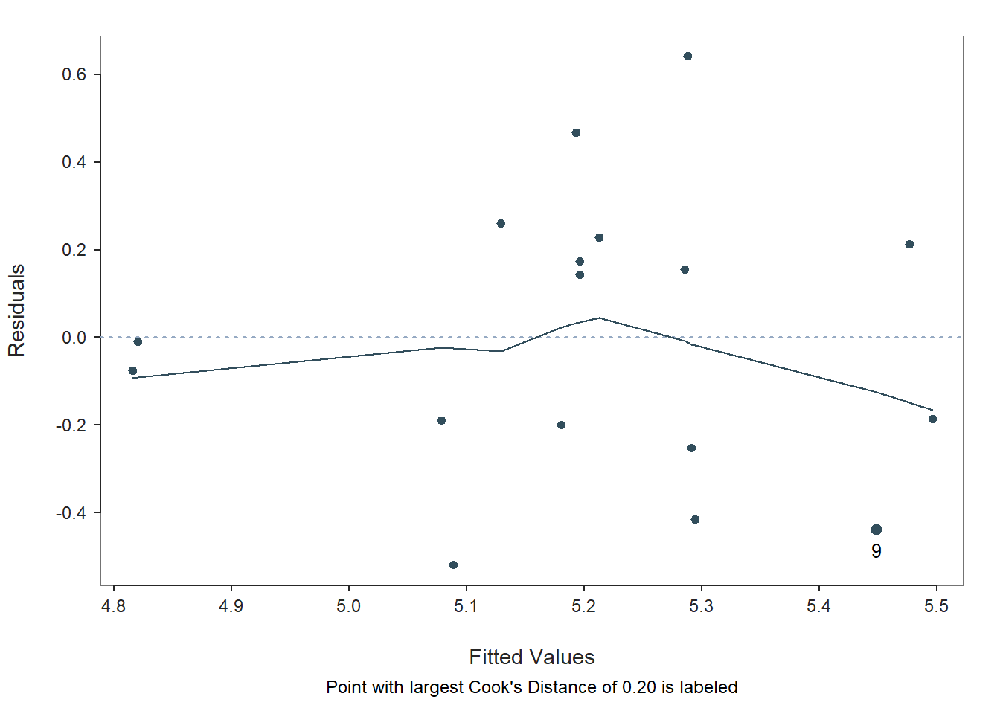

Using the lessR package to investigate wellbeing data
Stuart Leeds
01/12/2021
Introduction
Employee wellbeing is a concern in occupational psychology. Negative antecedents such as toxic work environments, poor organisational climate, bullying, amount and type of working hours among many others (Colligan & Higgins, 2006), increase employee stress. The addition of the Covid-19 pandemic brings new stressors, such as changing working practices by working from home or being on furlough, which have helped contribute to what has become known as “The Great Resignation” (TGR).
It would seem that the pandemic has allowed some people to re-evaluate their lives and working practices, thereby, looking after their own wellbeing by doing what is best for them. Though these might be troubling times as far as some employees or organisations are concerned, some recruitment writers see suitable benefits for how TGR can potentially benefit your career and consequently increase wellbeing.
However, this is not an essay or report on wellbeing in the workplace. The subject is far too deep and complicated to go into here in any great detail, but the introduction sets the scene.
The idea here is to investigate the relationships between wellbeing and working hours using the lessr package (Gerbing et al., 2022) which I have recently found to be very useful.
The Data
The wellbeing data are included in the UsingR package (Verzani, 2022) and originally used here, where you can see interactive correlations with wellbeing and variables of your choice. There are also links to the data origin at The National Accounts of Well-being and category data from Gapminder, where you can also download other data from the Gapminder database in CSV or XLSX formats.
The wellbeing data consists of \(22\) observations (European countries):
Austria, Belgium, Bulgaria, Cyprus, Denmark, Estonia, Finland, France, Germany, Hungary, Ireland, Netherlands, Norway, Poland, Portugal, Slovakia, Slovenia, Spain, Sweden, Switzerland, Ukraine, United Kingdom
and \(11\) additional variables:
Well.being, GDP, Equality, Food.consumption, Alcohol.consumption, Energy.consumption, Family, Working.hours, Work.income, Health.spending, Military.spending
The data require minimal cleaning, so in this case only the necessary columns are selected with d[] function; and the Well.being column sorted with the Sort() function in lessR (all code for this document can be found in the Appendix). For the purposes of using lessR, the UsingR::wellbeing data frame was saved as an .xlsx file with Write() and re-imported with Read() into the variable d (you might not have to do this - I could not get the original data to be manipulated with lessR functions).
The Analysis
Table 1 shows the top five European countries with the highest wellbeing (Denmark: 5.93), and the bottom five with the lowest wellbeing (Ukraine: 4.39). There’s not much difference between the highest and lowest positions (1.54).
|
Highest Wellbeing
|
Lowest Wellbeing
|
||||||||||||||||||||||||||||||||||||
|---|---|---|---|---|---|---|---|---|---|---|---|---|---|---|---|---|---|---|---|---|---|---|---|---|---|---|---|---|---|---|---|---|---|---|---|---|---|
|
|
||||||||||||||||||||||||||||||||||||
| Note: | |||||||||||||||||||||||||||||||||||||
| Working.hours are the average working hours per week per person |
Not all functions from lessr are necessary for this project. So aside from the “tidying” functions used above, the additional functions of interest are Regression() and regPlot().
The Regression() function is really useful. As the name lessR suggests, less \(R\) and more output. We want to explore the relationship between wellbeing (Intercept) and the average working hours per week per person (predictor). The output for Regression() includes everything you need (and more), all of which can be presented separately if assigned to its own variable, such as:
- The regression estimate:
## Estimate Std Err t-value p-value Lower 95% Upper 95%
## (Intercept) 7.08 0.83 8.571 0.000 5.32 8.84
## Working.hours -0.06 0.03 -2.279 0.038 -0.11 -0.00
- The Anova:
## df Sum Sq Mean Sq F-value p-value
## Model 1 0.58 0.58 5.20 0.038
## Residuals 15 1.68 0.11
## Well.being 16 2.27 0.14
- The adjusted R-squared value is \((R^2_adj = 0.2077)\).
The statistical information is reported as follows:
A simple linear regression was carried out to test if Working Hours significantly predicted Wellbeing. The results of the regression indicated that the model explained 20.77% of the variance and that the model was significant, \(F\)(1, 15) \(=\) 5.2, \(p=\) 0.038. It was found that Working Hours significantly predicted Wellbeing (\(B_1=\) -0.06, \(p=\) 0.038).
The final predictive model is: proportion of Wellbeing \(=\) 7.08 + (-0.06 \(\times\) Working Hours)
Plots
Three plots for visualising the regression and the assumptions are also produced (automatically in the Regression() function, or separately using regPlot(), as here:)
Figure 1.
Scatterplot showing regression line, prediction and confidence intervals:

Figure 2.
Bar/density plot for distribution of residuals
Figure 3.
Scatterplot for residuals vs. fitted values

Additional Output
Additional analyses of interest in the Regression() output are the correlation matrix, which shows a negative moderate relationship between wellbeing and working hours \((r= -0.51)\):
- RELATIONS AMONG THE VARIABLES:
## Well.being Working.hours
## Well.being 1.00 -0.51
## Working.hours -0.51 1.00
- RESIDUALS AND INFLUENCE (Top five showing here)
## [1] "Data, Fitted, Residual, Studentized Residual, Dffits, Cook's Distance"
## [2] " [sorted by Cook's Distance]"
## [3] " [res_rows = 17, out of 17 ]"
## [4] "--------------------------------------------------------------"
## [5] " Working.hours Well.being fitted resid rstdnt dffits cooks"
## [6] " 9 27.55 5.01 5.45 -0.44 -1.49 -0.65 0.20"
## [7] " 5 30.27 5.93 5.29 0.64 2.24 0.62 0.15"
## [8] " 16 33.63 4.57 5.09 -0.52 -1.72 -0.51 0.12"
## [9] " 20 31.87 5.66 5.19 0.47 1.50 0.37 0.06"
## [10] " 8 30.16 4.88 5.29 -0.41 -1.32 -0.37 0.06"
- PREDICTION ERROR
Data, Predicted, Standard Error of Forecast, 95% Prediction Intervals [sorted by lower bound of prediction interval] ———————————————-(Top 5 again)
## [1] " Working.hours Well.being pred sf pi.lwr pi.upr width"
## [2] " 10 38.25 4.74 4.82 0.38 4.00 5.64 1.64"
## [3] " 14 38.17 4.81 4.82 0.38 4.00 5.64 1.64"
## [4] " 15 33.81 4.89 5.08 0.35 4.33 5.82 1.49"
## [5] " 16 33.63 4.57 5.09 0.35 4.35 5.83 1.49"
## [6] " 7 32.95 5.39 5.13 0.35 4.39 5.87 1.48"
Another excellent feature of the
Regression()function is theRmd = "filename"parameter which automatically produces an explanatory and exploratory.Rmddocument of the regression analysis that can be edited; and an additional.htmldocument, which for this analysis you can read here.
Further Query
Clearly, working more hours in a week reduces wellbeing. We have already seen that the Wellbeing Mean for this data set is \(5.1\). This could be considered as peak wellbeing, so what are the average working hours per week per person needed to maintain that level of wellbeing?
The prediction output suggests a level of wellbeing at \(5.13\) \((95\%\space CI[4.39, 5.87])\) for \(32.95\) (round to \(33\)) average hours worked at item \(7\):
## [1] " Working.hours Well.being pred sf pi.lwr pi.upr width"
## [2] " 7 32.95 5.39 5.13 0.35 4.39 5.87 1.48"
This prediction can be confirmed with the regression calculation identified above:
Wellbeing = 7.08 + (-0.06 \(\times\) Working Hours) \(\space\therefore\space\) 7.08 + (-0.06 \(\times\) 33) \(=\) 5.13
If the preferred working hours to maintain wellbeing at \(5.13\) is \(33\), then the question is: would it be more beneficial to work a shorter week with longer hours per day, or a longer week with fewer hours per day? See Table 2 (Calculations converted to time with lubridate (Spinu et al., 2021)).
| Days per Week | Hours per Day |
|---|---|
| 4 | 8H 15M 0S |
| 5 | 6H 36M 0S |
Of course there are other options, for example, a three day week at \(11\) hours per day, or a six day week at \(5\) hours \(30\) minutes per day, not intending to dismiss those workers who would do more (or less).
This theory does not account for the four countries that work fewer than \(33\) hours per week per person and have a lower than average wellbeing: Belgium, France, Germany and the United Kingdom (See the lower-left quadrant of Figure 1; and Table 3).
| Country | Well.being | Well.being.diff | Working.hours | Working.hours.diff |
|---|---|---|---|---|
| Belgium | 5.04 | -0.09 | 30.21 | -2.79 |
| France | 4.88 | -0.25 | 30.16 | -2.84 |
| Germany | 5.01 | -0.12 | 27.55 | -5.45 |
| United Kingdom | 4.98 | -0.15 | 32.09 | -0.91 |
In this group, France has the largest difference in wellbeing \((-0.25)\), a \(1/4\) of a point less than average wellbeing. However, all of the wellbeing differences are very small; and the wellbeing scores for each country are within the bounds of the \(95\%\space CI[4.39, 5.87]\) of the wellbeing/working hours prediction. The country with the greatest working hours difference is Germany at \(-5.45\), which is \(5\) hours \(27\) minutes fewer than average. Further research is required to determine the whys and wherefores, which is beyond the scope of this report.
Conclusion
A very brief introduction to employee wellbeing preceded the purpose of using various functions from the lessR package to explore the relationship between Well.being and Working.hours in \(22\) European countries using the UsingR::wellbeing data set. The lessR functions used were Write(), Read(), d[], Sort(), Regression() and regPlot(). The key Regression() outputs, estimate, ANOVA and adjusted R-squared were presented separately to weave into the text, along with three plots to verify regression assumptions. Additional output for correlation, residuals and influence and prediction error followed. Further query suggested a predicted number of average working hours to maintain average wellbeing, with speculative thought on how a working week could be arranged. Finally, the four countries showing less than wellbeing average and fewer than average working hours were addressed. In general, lessR was found to be an excellent \(R\) package to manipulate data with minimal use of \(R\) for maximum output.
References
Appendix: All code for this article
# Setup
knitr::opts_chunk$set(
echo = FALSE,
message = FALSE,
warning = FALSE,
results = "hide",
fig.align = "center"
)
# Libraries
library(UsingR) # For wellbeing data
library(lessR) # Main package
library(kableExtra) # For tables
library(lubridate) # For date & time functions
# Creation of R package citation file
knitr::write_bib(c(.packages(), "rmarkdown"), "../common/packages.bib")
# Data loading from UsingR
mydata <- wellbeing
# Write to `lessr` .xlsx format (uncomment - only needs doing once)
# Write("./data/wellbeing", format = "Excel", data = mydata)
# Read data
d <- Read("./data/wellbeing.xlsx")## [with the read.xlsx() function from Schauberger and Walker's openxlsx package]
##
## >>> Suggestions
## To read a csv or Excel file of variable labels, var_labels=TRUE
## Each row of the file: Variable Name, Variable Label
## Details about your data, Enter: details() for d, or details(name)
##
## Data Types
## ------------------------------------------------------------
## character: Non-numeric data values
## double: Numeric data values with decimal digits
## ------------------------------------------------------------
##
## Variable Missing Unique
## Name Type Values Values Values First and last values
## ------------------------------------------------------------------------------------------
## 1 Country character 22 0 22 Austria ... United Kingdom
## 2 Well.being double 22 0 21 5.37 5.04 4.59 ... 5.66 4.39 4.98
## 3 GDP double 22 0 22 26171.6909118266 ... 28913.0962918089
## 4 Equality double 21 1 21 70.85 67.03 ... 71.77375 64.03
## 5 Food.consumption double 22 0 22 3760.36 3674.95 ... 3251.21 3437.22
## 6 Alcohol.consumption double 22 0 21 13.24 10.77 12.44 ... 11.06 15.6 13.37
## 7 Energy.consumption double 22 0 22 2076.20046430559 ... 1921.65630197802
## 8 Family double 22 0 21 1.4054 1.76 1.39 ... 1.43 1.3 1.77
## 9 Working.hours double 17 5 17 31.8173076923077 ... 32.0903836763822
## 10 Work.income double 16 6 16 30.4599990844727 ... 27.1000003814697
## 11 Health.spending double 22 0 22 15.74170456 ... 15.58877599
## 12 Military.spending double 22 0 22 0.812633138406514 ... 2.35142785961432
## ------------------------------------------------------------------------------------------
##
##
## For the column Country, each row of data is unique. Are these values
## a unique ID for each row? To implement, perhaps re-read a worksheet or text
## file with the following setting added to your Read statement: row_names=1# Select columns of interest
d <- d[, .("Country", "Well.being", "Working.hours")]
# Sort countries by wellbeing
d_sort <- Sort(d, Well.being, direction = "-")##
## Sort Specification
## Well.being --> descending# Table top/bottom five
wb_tab <- kbl(list(head(d_sort, 5), tail(d_sort, 5)),
caption = "<b>Table 1.</b><br><i>European Countries with Highest & Lowest Wellbeing</i>",
row.names = F, digits = 2
) |>
kable_classic(full_width = FALSE) |>
add_header_above(c(
"Highest Wellbeing",
"Lowest Wellbeing"
),
align = "l"
)
footnote(wb_tab,
general = "Working.hours are the average working hours per week per person")|
Highest Wellbeing
|
Lowest Wellbeing
|
||||||||||||||||||||||||||||||||||||
|---|---|---|---|---|---|---|---|---|---|---|---|---|---|---|---|---|---|---|---|---|---|---|---|---|---|---|---|---|---|---|---|---|---|---|---|---|---|
|
|
||||||||||||||||||||||||||||||||||||
| Note: | |||||||||||||||||||||||||||||||||||||
| Working.hours are the average working hours per week per person |
# The `Regression` function
r <- Regression(Well.being ~ Working.hours,
digits_d = 2,
# Rmd = "lessr_wellbeing_out", # uncomment for Rmd, change name to suit
graphics = FALSE # Replace with TRUE for three plots:
# (1: Regression, 2: Distribution, 3: Fitted Values)
)
r## >>> Suggestion
## # Create an R markdown file for interpretative output with Rmd = "file_name"
## Regression(my_formula=Well.being ~ Working.hours, digits_d=2, graphics=FALSE, Rmd="eg")
##
## BACKGROUND
##
## Data Frame: d
##
## Response Variable: Well.being
## Predictor Variable: Working.hours
##
## Number of cases (rows) of data: 22
## Number of cases retained for analysis: 17
##
## BASIC ANALYSIS
##
## Estimate Std Err t-value p-value Lower 95% Upper 95%
## (Intercept) 7.08 0.83 8.571 0.000 5.32 8.84
## Working.hours -0.06 0.03 -2.279 0.038 -0.11 -0.00
##
## Standard deviation of Well.being: 0.40
##
## Standard deviation of residuals: 0.33 for 15 degrees of freedom
## 95% range of residual variation: 1.43 = 2 * (2.131 * 0.33)
##
## R-squared: 0.257 Adjusted R-squared: 0.208 PRESS R-squared: 0.102
##
## Null hypothesis of all 0 population slope coefficients:
## F-statistic: 5.195 df: 1 and 15 p-value: 0.038
##
## df Sum Sq Mean Sq F-value p-value
## Model 1 0.58 0.58 5.20 0.038
## Residuals 15 1.68 0.11
## Well.being 16 2.27 0.14
##
## K-FOLD CROSS-VALIDATION
##
## RELATIONS AMONG THE VARIABLES
##
## Well.being Working.hours
## Well.being 1.00 -0.51
## Working.hours -0.51 1.00
##
## RESIDUALS AND INFLUENCE
##
## Data, Fitted, Residual, Studentized Residual, Dffits, Cook's Distance
## [sorted by Cook's Distance]
## [res_rows = 17, out of 17 ]
## --------------------------------------------------------------
## Working.hours Well.being fitted resid rstdnt dffits cooks
## 9 27.55 5.01 5.45 -0.44 -1.49 -0.65 0.20
## 5 30.27 5.93 5.29 0.64 2.24 0.62 0.15
## 16 33.63 4.57 5.09 -0.52 -1.72 -0.51 0.12
## 20 31.87 5.66 5.19 0.47 1.50 0.37 0.06
## 8 30.16 4.88 5.29 -0.41 -1.32 -0.37 0.06
## 13 27.08 5.69 5.48 0.21 0.69 0.33 0.06
## 12 26.75 5.31 5.50 -0.19 -0.61 -0.31 0.05
## 7 32.95 5.39 5.13 0.26 0.80 0.22 0.02
## 2 30.21 5.04 5.29 -0.25 -0.77 -0.21 0.02
## 10 38.25 4.74 4.82 -0.08 -0.26 -0.18 0.02
## 15 33.81 4.89 5.08 -0.19 -0.58 -0.18 0.02
## 11 31.54 5.44 5.21 0.23 0.69 0.17 0.02
## 22 32.09 4.98 5.18 -0.20 -0.60 -0.15 0.01
## 1 31.82 5.37 5.20 0.17 0.52 0.13 0.01
## 19 30.30 5.44 5.29 0.15 0.46 0.13 0.01
## 18 31.82 5.34 5.20 0.14 0.43 0.11 0.01
## 14 38.17 4.81 4.82 -0.01 -0.04 -0.02 0.00
##
## PREDICTION ERROR
##
## Data, Predicted, Standard Error of Forecast,
## 95% Prediction Intervals
## [sorted by lower bound of prediction interval]
## ----------------------------------------------
##
## Working.hours Well.being pred sf pi.lwr pi.upr width
## 10 38.25 4.74 4.82 0.38 4.00 5.64 1.64
## 14 38.17 4.81 4.82 0.38 4.00 5.64 1.64
## 15 33.81 4.89 5.08 0.35 4.33 5.82 1.49
## 16 33.63 4.57 5.09 0.35 4.35 5.83 1.49
## 7 32.95 5.39 5.13 0.35 4.39 5.87 1.48
## 22 32.09 4.98 5.18 0.34 4.45 5.91 1.47
## 20 31.87 5.66 5.19 0.34 4.46 5.93 1.47
## 18 31.82 5.34 5.20 0.34 4.46 5.93 1.47
## 1 31.82 5.37 5.20 0.34 4.46 5.93 1.47
## 11 31.54 5.44 5.21 0.34 4.48 5.95 1.47
## 19 30.30 5.44 5.29 0.35 4.55 6.02 1.48
## 5 30.27 5.93 5.29 0.35 4.55 6.03 1.48
## 2 30.21 5.04 5.29 0.35 4.55 6.03 1.48
## 8 30.16 4.88 5.29 0.35 4.56 6.03 1.48
## 9 27.55 5.01 5.45 0.36 4.68 6.22 1.54
## 13 27.08 5.69 5.48 0.36 4.70 6.25 1.55
## 12 26.75 5.31 5.50 0.37 4.71 6.28 1.57# The estimates output
r$out_estimates## Estimate Std Err t-value p-value Lower 95% Upper 95%
## (Intercept) 7.08 0.83 8.571 0.000 5.32 8.84
## Working.hours -0.06 0.03 -2.279 0.038 -0.11 -0.00# The ANOVA output
r$out_anova## df Sum Sq Mean Sq F-value p-value
## Model 1 0.58 0.58 5.20 0.038
## Residuals 15 1.68 0.11
## Well.being 16 2.27 0.14# The regression plot
regPlot(r, 1, res_rows = "all") # Max rows = 20, use `res_rows='all'` for all rows
# The residual barplot
regPlot(r, 2, res_rows = "all") # Max rows = 20, use `res_rows='all'` for all rows
# The residual scatterplot
regPlot(r, 3, res_rows = "all") # Max rows = 20, use `res_rows='all'` for all rows
# The correlation matrix
r$out_cor## Well.being Working.hours
## Well.being 1.00 -0.51
## Working.hours -0.51 1.00# The residuals output
head(r$out_residuals, 10)## [1] "Data, Fitted, Residual, Studentized Residual, Dffits, Cook's Distance"
## [2] " [sorted by Cook's Distance]"
## [3] " [res_rows = 17, out of 17 ]"
## [4] "--------------------------------------------------------------"
## [5] " Working.hours Well.being fitted resid rstdnt dffits cooks"
## [6] " 9 27.55 5.01 5.45 -0.44 -1.49 -0.65 0.20"
## [7] " 5 30.27 5.93 5.29 0.64 2.24 0.62 0.15"
## [8] " 16 33.63 4.57 5.09 -0.52 -1.72 -0.51 0.12"
## [9] " 20 31.87 5.66 5.19 0.47 1.50 0.37 0.06"
## [10] " 8 30.16 4.88 5.29 -0.41 -1.32 -0.37 0.06"# The prediction output
head(r$out_predict)## [1] " Working.hours Well.being pred sf pi.lwr pi.upr width"
## [2] " 10 38.25 4.74 4.82 0.38 4.00 5.64 1.64"
## [3] " 14 38.17 4.81 4.82 0.38 4.00 5.64 1.64"
## [4] " 15 33.81 4.89 5.08 0.35 4.33 5.82 1.49"
## [5] " 16 33.63 4.57 5.09 0.35 4.35 5.83 1.49"
## [6] " 7 32.95 5.39 5.13 0.35 4.39 5.87 1.48"# The prediction output for 5.13 wellbeing
r$out_predict[c(1, 6)]## [1] " Working.hours Well.being pred sf pi.lwr pi.upr width"
## [2] " 7 32.95 5.39 5.13 0.35 4.39 5.87 1.48"# The data frame for speculative working week
time_table <- data.frame(
"Days" = c(4, 5),
"Hours" = c(
seconds_to_period(33 / 4 * 3600), seconds_to_period(33 / 5 * 3600))
)
# The table for speculative working week
kbl(time_table,
caption = "<b>Table 2.</b><br><i>Speculative Working Week</i>",
row.names = FALSE,
col.names = c("Days per Week", "Hours per Day")
) |>
kable_classic(full_width = FALSE)| Days per Week | Hours per Day |
|---|---|
| 4 | 8H 15M 0S |
| 5 | 6H 36M 0S |
# Find countries with wellbeing < 5.13 and working hours < 33
ifelse(d$Well.being < 5.13 & d$Working.hours < 33, d$Country, NA)## [1] NA "Belgium" NA NA
## [5] NA NA NA "France"
## [9] "Germany" NA NA NA
## [13] NA NA NA NA
## [17] NA NA NA NA
## [21] NA "United Kingdom"# Data frame for countries with wellbeing < 5.13 and working hours < 33
less_well <- data.frame(
Country = c(d$Country[2], d$Country[8],
d$Country[9], d$Country[22]),
Well.being = c(d$Well.being[2], d$Well.being[8],
d$Well.being[9], d$Well.being[22]),
Well.being.diff = c(d$Well.being[2] - 5.13, d$Well.being[8] - 5.13,
d$Well.being[9] - 5.13, d$Well.being[22] - 5.13),
Working.hours = c(d$Working.hours[2], d$Working.hours[8],
d$Working.hours[9], d$Working.hours[22]),
Working.hours.diff = c(d$Working.hours[2] - 33, d$Working.hours[8] - 33,
d$Working.hours[9] - 33, d$Working.hours[22] - 33)
)
# Table for countries with wellbeing < 5.13 and working hours < 33
kbl(less_well,
caption = "<b>Table 3.</b><br><i>European Countries with Wellbeing < 5.13 and Working Hours < 33</i>",
row.names = F, digits = 2
) |>
kable_classic(full_width = FALSE)| Country | Well.being | Well.being.diff | Working.hours | Working.hours.diff |
|---|---|---|---|---|
| Belgium | 5.04 | -0.09 | 30.21 | -2.79 |
| France | 4.88 | -0.25 | 30.16 | -2.84 |
| Germany | 5.01 | -0.12 | 27.55 | -5.45 |
| United Kingdom | 4.98 | -0.15 | 32.09 | -0.91 |